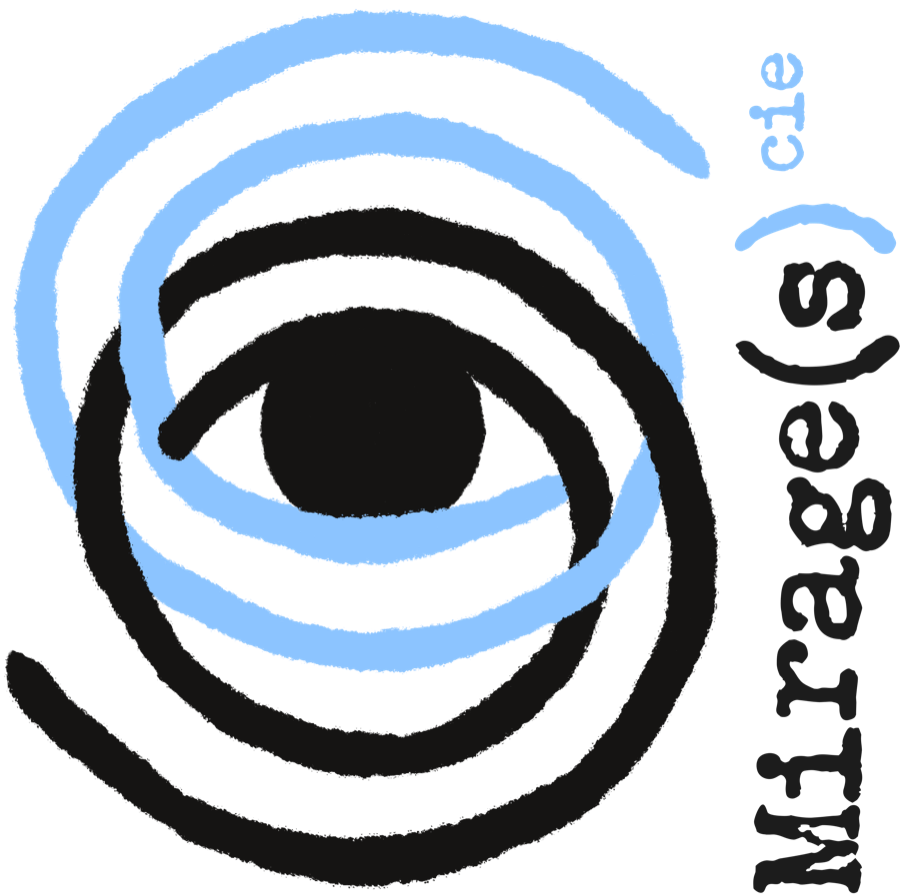

La Compagnie

Le théâtre comme illusion partagée
Mirage(s) est une jeune compagnie créée en 2025. Elle est née d'une envie de faire du théâtre sans trop nous imposer de limites, avec la conviction que tout ce qui se passe sur une scène peut avoir son importance.
Le texte, bien sûr, est toujours notre point de départ. C'est lui qui nous rassemble et qui pose la première question : comment le faire entendre aujourd'hui ? Comment le faire résonner, avec ce que nous sommes et avec les moyens qui sont les nôtres ?
À partir de là, nous essayons de ne rien considérer comme secondaire. Le jeu des acteurs, le corps, le mouvement, la danse, la musique, la lumière, les couleurs, les costumes, la scénographie : chacun de ces éléments peut devenir une manière de raconter. Nous travaillons beaucoup à les faire dialoguer et essayons de ne rien laisser au hasard.
La musique occupe une place particulièrement importante dans notre travail. Le corps aussi. Nous aimons chercher ce qui peut être raconté sans les mots, par un mouvement, un silence ou un regard. Le mime revient ainsi régulièrement dans nos créations et nous nous sommes récemment essayés au travail du masque. Non pas dans l'idée de multiplier les formes pour elles-mêmes, mais parce que chacune peut, à sa manière, révéler quelque chose que le texte seul ne pourrait peut-être pas dire.
Nous accordons également une grande place au rêve. Nos spectacles sont souvent traversés par des moments plus oniriques, où les règles du réel se déplacent légèrement. C'est sans doute aussi de là que vient le nom Mirage(s).
Mais le mirage est peut-être, plus simplement encore, ce que nous faisons tous lorsque nous faisons du théâtre.
Un spectateur entre dans une salle et s'assied dans un fauteuil. Pendant quelques instants, il essaie de laisser dehors sa journée, ses préoccupations, sa propre vie. Puis les lumières s'éteignent. Si quelque chose fonctionne, il entre peu à peu dans une histoire dont il sait pourtant qu'elle n'existe pas. Devant lui, des acteurs deviennent d'autres qu'eux-mêmes. Un décor devient une chambre, une prison, une maison ou autre chose. Une lumière transforme un espace. Quelques notes de musique peuvent faire surgir un souvenir ou une émotion. Et pendant une heure, nous décidons tous ensemble d'y croire.
Tout est faux, et pourtant ce que nous ressentons peut être profondément vrai.
C'est peut-être là que se trouve le paradoxe qui nous intéresse le plus. Nous fabriquons des illusions, mais nous essayons de le faire avec le plus de sincérité possible. Nous jouons à être quelqu'un d'autre pour tenter de raconter quelque chose de profondément humain. Nous construisons un monde qui disparaîtra quelques instants plus tard, avec l'espoir que quelque chose, lui, restera.
Le théâtre est en cela un art étrange. Il n'existe véritablement qu'au présent. Chaque représentation dépend de ceux qui sont sur scène et de ceux qui sont dans la salle. Une représentation ne pourra jamais être exactement reproduite. Elle existe pendant un instant, puis elle disparaît.
Il y a quelque chose du rêve là-dedans.
Quelque chose aussi d'un mot écrit sur le sable que la mer viendrait presque aussitôt effacer. Il a existé. Quelques personnes l'ont vu. Puis il n'est plus là.
Chaque représentation devient ainsi une expérience unique, partagée entre ceux qui la regardent et ceux qui la vivent sur scène. Le lendemain, nous recommençons. Ce sera la même pièce, les mêmes mots, le même décor, et pourtant ce ne sera déjà plus tout à fait la même chose.
Un rêve, peut-être. Ou un mirage.
Et puisque Mirage(s) n'en est encore qu'au début de son histoire, nous ne voulons surtout pas définir trop vite ce que notre théâtre doit être. Nous voulons continuer à essayer, nous tromper parfois, découvrir de nouvelles formes, rencontrer d'autres disciplines et d'autres artistes. Élargir notre horizon, apprendre et comprendre un peu mieux ce que nous pouvons faire d'un plateau.
Nous savons simplement ce que nous voulons essayer de préserver : la sincérité de notre démarche, l'exigence portée à chaque détail et le désir de raconter des histoires qui ne disparaissent pas tout à fait lorsque les lumières se rallument.
Artistes & collaborateurs

Grégoire Besançon
Fondateur, Metteur en scène, ComédienFondateur de la compagnie Mirage(s) en 2025. Met en scène et interprète L'Amant de Harold Pinter, et co-signe la mise en scène et l'interprétation d'Une Mouche dans le Théâtre.

Madeleine Besançon
Comédienne, Auteure, CompositriceÉcrit le texte et compose la musique d'Une Mouche dans le Théâtre, qu'elle interprète et met en scène avec Grégoire Besançon.
madeleine-besancon.fr
Dorothée Malfoy-Noël
ComédienneInterprète dans L'Amant de Harold Pinter.

Marie-Lou Seince
ComédienneInterprète dans L'Amant de Harold Pinter.

Emma Besançon
Designer graphique, Directrice artistiqueJeune directrice artistique parisienne formée cinq ans à l'école Penninghen, Emma signe le logotype et l'identité graphique de la compagnie Mirage(s). Elle réalise également l'affiche de L'Amant et d'Une Mouche dans le Théâtre.
emmabesancon.com
Sophie Planté
ChorégrapheDanseuse formée par Matt Mattox, comédienne passée par le Cours Florent et le Cours Mesguich, elle signe la chorégraphie de L'Amant de Harold Pinter.